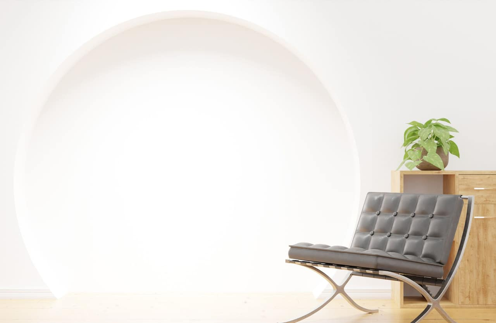
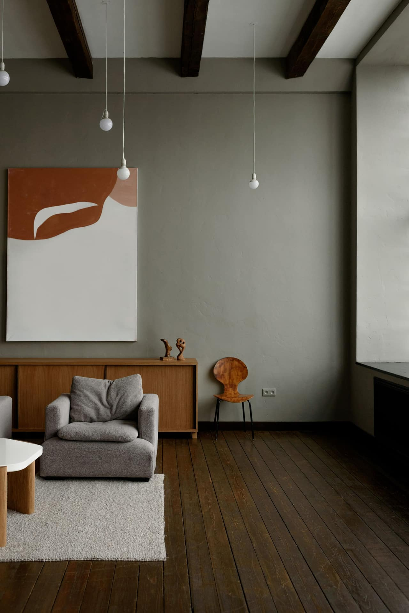
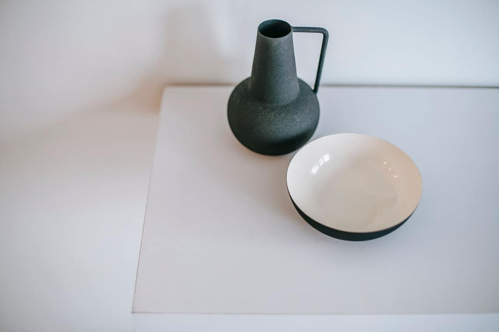

Як натуральне світло змінює простір
Чому орієнтація вікон важливіша за їхній розмір.
Читати →Блог
Короткі тексти про світло, матеріали та підхід до проєктування — все, що ми дізнаємось у роботі над проєктами.

Чому орієнтація вікон важливіша за їхній розмір.
Читати →
Бетон, дерево та цегла — вибір, що виграє з часом.
Читати →
Що варто вирішити ще до першого ескізу.
Читати →